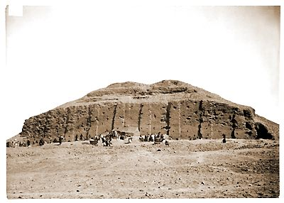

ZigguratsThese stepped towers we call ziggurats. By 2000 B.C. mud-brick ziggurats were being constructed in many Sumerian cities. Later, ziggurats were constructed in Babylonian and Assyrian cities.  No one knows for certain why ziggurats were built or how they were used. They are part of temple complexes, so they were probably connected with religion.
| ||||||||